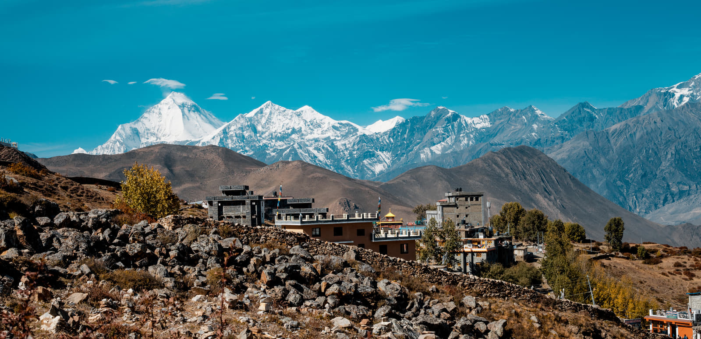

TOURS AND EXPEDITION
Discover the sacred sanctuary of Muktinath, where Hindu and Buddhist traditions converge at 3,800 meters. A pilgrimage destination that promises spiritual liberation and eternal peace.

Explore our specially designed tour packages to experience the divine serenity of Muktinath Temple with comfort and devotion.
View Tour PackagesNestled in the Mustang district of Nepal at an altitude of 3,800 meters, Muktinath Temple stands as one of the most revered pilgrimage sites in the Himalayas. Known as "Mukti Kshetra" (place of liberation), this sacred temple holds profound spiritual significance for both Hindus and Buddhists, making it a unique confluence of two major religions in the shadow of the Annapurna and Dhaulagiri mountain ranges.
For Hindus, Muktinath is one of the 108 Divya Desams (divine places) dedicated to Lord Vishnu. Known as "Muktinath" meaning "the provider of salvation," it is believed that a single visit to this sacred temple can liberate devotees from the cycle of birth and death.
Buddhists revere Muktinath as a place of spiritual power associated with Guru Rinpoche (Padmasambhava), who is said to have meditated here. Known to Buddhists as "Chumig Gyatsa" meaning "Hundred Waters," the site represents enlightenment and is considered one of the 24 tantric places.
Inside the main temple, a natural flame burns continuously, fed by underground natural gas. This miraculous phenomenon, where fire burns alongside water in a sacred spring, is considered highly auspicious by both religions.
The ideal time to visit Muktinath is during spring (March to May) and autumn (September to November) when the weather is pleasant and skies are clear. Summer monsoons (June to August) can make roads challenging, though the Mustang region receives less rainfall than other parts of Nepal. Winter (December to February) brings heavy snowfall and extreme cold, making access difficult but offering a serene, snow-covered landscape for the adventurous.
From Kathmandu, most travelers fly to Pokhara and then take a scenic flight to Jomsom, followed by a 2-3 hour jeep ride or trek to Muktinath. Alternatively, adventurous pilgrims can trek the classic Annapurna Circuit route, which takes 7-10 days from Besisahar. The newly constructed road from Pokhara via Beni and Jomsom allows for direct bus or jeep access, though the journey takes 8-10 hours. For the ultimate luxury, helicopter services operate from Pokhara, reaching Muktinath in just 30 minutes.
Muktinath offers a range of accommodation from basic guesthouses to comfortable lodges with heated rooms. Nearby Ranipauwa village has numerous hotels catering to pilgrims, with facilities improving each year. Most lodges provide hot showers, WiFi, and multi-cuisine restaurants serving vegetarian food. During peak pilgrimage season (April-May and October-November), advance booking is highly recommended. Prices range from budget options at $10-15 per night to premium lodges at $40-60 per night.
At 3,800 meters, altitude sickness is a real concern for travelers. Symptoms include headaches, nausea, and shortness of breath. Proper acclimatization is essential—spend at least one night in Jomsom (2,700m) before ascending to Muktinath. Stay well-hydrated, avoid alcohol, and walk slowly. Most people adjust within 24-48 hours. Those with heart conditions or respiratory issues should consult doctors before planning the trip. Diamox tablets can help prevent altitude sickness if taken preventatively.
Essential items include warm layers (temperatures can drop to -10°C at night), comfortable trekking shoes, sunscreen (SPF 50+), sunglasses, lip balm, personal medications, and toiletries. Bring a good quality sleeping bag if trekking, thermal wear, wind-proof jacket, woolen cap, and gloves. Power banks are useful as electricity can be intermittent. Most importantly, carry your faith and an open heart—the spiritual experience transcends material preparation.
A typical 5-6 day Muktinath tour from Kathmandu costs between $300-$600 per person depending on travel mode and accommodation choices. Budget travelers can manage with $40-50 per day including food and lodging. Mid-range comfort costs $80-120 per day. Helicopter packages start from $1,500 for roundtrip from Kathmandu. Entrance fees are minimal (around NPR 50), but donations to the temple are customary. Carry sufficient Nepali rupees as ATMs are unreliable in remote areas.
The region around Muktinath offers several additional pilgrimage and tourist sites. Jwala Mai Temple, located below the main temple, features another eternal flame. The ancient village of Kagbeni, a gateway to Upper Mustang, offers stunning medieval architecture.
The Mustang region offers a unique blend of Tibetan Buddhist and Hindu cultures. Villages showcase traditional Tibetan architecture with white-washed houses and Buddhist monasteries. Locals practice ancient customs and speak Tibetan dialects.
Muktinath and its surroundings offer spectacular photography opportunities. Capture the golden sunrise over snow-capped peaks, the stark beauty of high-altitude desert landscapes, colorful prayer flags fluttering against blue skies, and devotees performing rituals under water spouts.
The most important ritual at Muktinath is bathing under all 108 water spouts. Devotees typically start early morning (4-5 AM) when water is coldest but the spiritual power is strongest. Move clockwise around the spouts, pausing briefly under each one while chanting mantras or prayers. Many believe completing the circuit absolves sins of countless lifetimes. Despite the freezing water, thousands perform this ritual daily during peak season, testament to their unwavering devotion.
After the sacred bath, devotees enter the main temple for darshan (viewing of the deity). Remove shoes before entering, dress modestly covering shoulders and knees, and maintain a reverent attitude. Inside, offer flowers, fruits, or monetary donations. The eternal flame and sacred spring require special reverence. Photography is generally prohibited inside the sanctum. Temple opens early morning (4 AM) and closes after evening aarti. Fridays and Ekadashi days see maximum crowds.
Buddhist pilgrims traditionally offer prayer flags around the temple complex. These colorful flags inscribed with sacred texts are believed to spread blessings as the wind carries their prayers across the mountains. The five colors represent the five elements: blue (sky), white (air), red (fire), green (water), and yellow (earth). Hanging prayer flags is considered highly meritorious, with the act of offering bringing peace and compassion to all beings.
Muktinath is mentioned in ancient Hindu texts including the Vishnu Purana and Mahabharata. The site is believed to be where Lord Brahma lit a sacred fire. Buddhist scriptures describe it as one of the 24 tantric places where practitioners achieve enlightenment. The Swasthani Purana narrates how sage Jalandhara performed penance here. These ancient references spanning thousands of years underscore Muktinath's enduring spiritual importance across generations and traditions.
Major festivals at Muktinath include Janai Purnima (July/August) when thousands of Hindu pilgrims gather for sacred thread ceremonies, and Buddha Jayanti (April/May) when Buddhist devotees celebrate Buddha's birth, enlightenment, and passing. During these festivals, the temple complex comes alive with special pujas, butter lamp offerings, and religious discourses. Attending festivals provides deep insight into living religious traditions and creates memorable spiritual experiences.
What makes Muktinath truly special is its acceptance and reverence across religious boundaries. Hindu and Buddhist pilgrims worship side by side in harmony, sharing the same sacred space peacefully. This religious tolerance and coexistence serves as a powerful reminder of humanity's common spiritual aspirations. People from diverse backgrounds—Indian, Nepali, Tibetan, and international travelers—all find meaning and solace here, proving that faith transcends cultural and geographical boundaries.